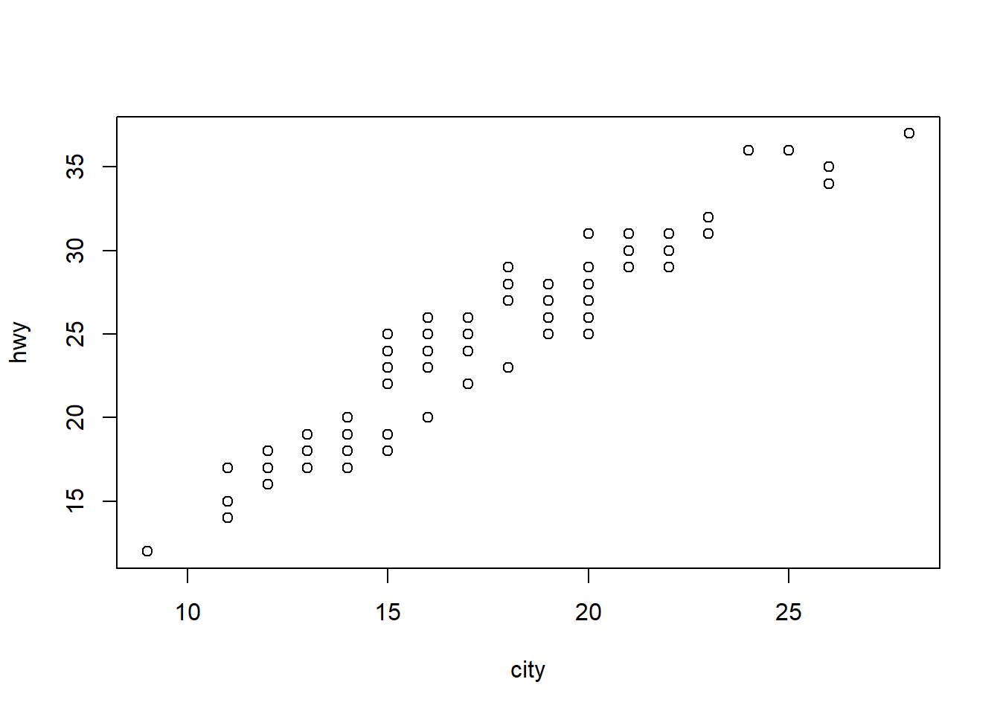
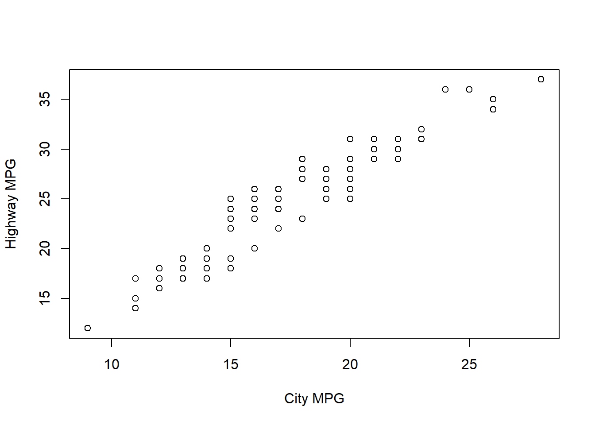
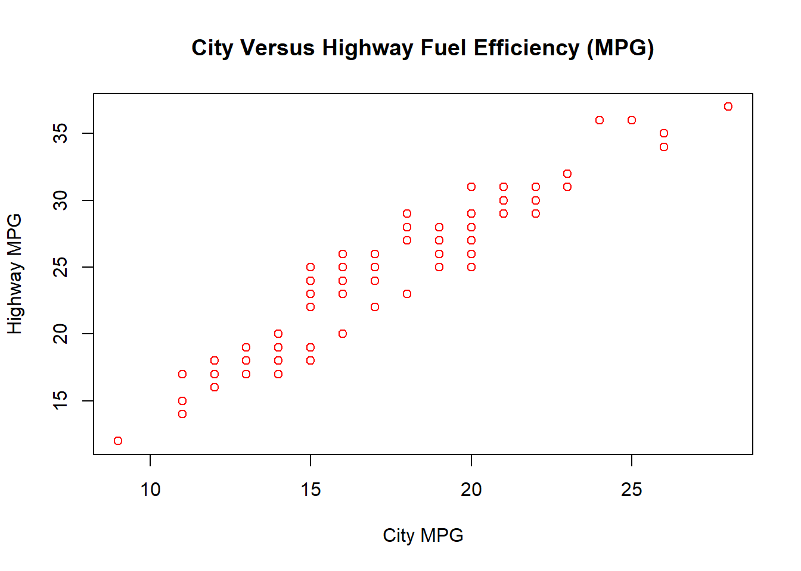

u1 <- runif(n/2, min = 0, max = 1) # uniform random numbers between 0 and 1
u2 <- runif(n/2, min = 0, max = 1) # uniform random numbers between 0 and 1execute: eval: true echo: true
Due Date
September 18, 2025 at the start of class
Directions
Answer all questions. Submit both a PDF and Quarto file to the nexus assignment portal.
1. Git and GitHub
- Create a GitHub repository called econ_3201 and connect it to RStudio.
- Create a new R project in this newly created directory called assignment_1. (Note, you do not have to click “Create git repository” as the directory is contained in a git enabled directory, i.e., econ_3201).
- Download the assignment PDF and Quarto file the assignment_1 folder.
- Commit and push the changes to your econ_3201 repository on GitHub.com.
2. LaTeX
LaTeX is useful for writing math equations and presents them in a neat and orderly way. To write in math mode, wrap your text in $ for inline text use two $s for display (i.e., centered on the page). Some very useful functions include:
- Fractions:
\frac{}{}, e.g.$\frac{1}{2}$gives \(\frac{1}{2}\) and$$\frac{1}{2}$$gives: \[\frac{1}{2}.\] - Subscripts:
_gives a subscript, e.g.$x_1$gives \(x_1\). To include more than one term in the subscript, the items in the subscript must be enclosed by{}. E.g.$x_{1,1}$gives \(x_{1,1}\). (Note that$x_1,1$gives \(x_1,1\)) - Exponents:
^, e.g.$x^2$gives \(x^2\).^can also be used for superscripts in other math functions, including summations and integrals. - Aligned:
alignedneatly aligns multiple lines of an equation. Align is useful when writing multiple steps to solving an equation. To use it in Quarto, write$$\begin{aligned}...\end{aligned}. The&is used to mark the point where the lines should be aligned. Use\\at the end of each line E.g.$$\begin{aligned}
x & = 3 + 5\\
& = 8
\end{aligned}$$
gives \[\begin{aligned} x & = 3 + 5\\ & = 8 \end{aligned}\]`
- Summation:
\sumgives the summation sign, i.e. \(\sum\). To include subscripts, use_and to use superscripts use^, e.g.$\sum_{i=1}^n$gives \(\sum_{i=1}^n\), which reads as the sum of \(i\) equals 1 to \(n\). - Integral:
\intgives an integral, i.e. \(\int\). To place a lower limit use_and to place an upper limit, use^, e.g.$\int_{a}^{b}$gives \(\int_{a}^{b}\). - Greek letters:
$\alpha, \beta, \gamma, \Gamma, \delta, \Delta, \epsilon, \varepsilon, \zeta, \eta,\sigma, \Sigma, \theta, \vartheta, \Theta, \iota, \kappa, \lambda, \Lambda, \mu$gives \(\alpha, \beta, \gamma, \Gamma, \delta, \Delta, \epsilon, \varepsilon, \zeta, \eta, \sigma, \Sigma, \theta, \vartheta, \Theta, \iota, \kappa, \lambda, \Lambda, \mu\). (See https://www.overleaf.com/learn/latex/List_of_Greek_letters_and_math_symbols ) - Accents:
\hat{},\tilde{}, and\bar{}are examples of accents in math mode. E.g.\hat{Y},\tilde{Y}, and\bar{Y}gives \(\hat{Y}\), \(\tilde{Y}\), and \(\bar{Y}\), respectively. - Text: To include text in your equation, i.e. non italicized text, use
\text{}, e.g.$x=2\text{ if } y=1$gives \(x=2\text{ if } y=1\). - Inequalities: Some mathematical expressions may be written as inequalities, rather than equations. For ‘less than’ and ‘greater than’, you can just use the symbol on your keyboard, i.e.
<and>, respectively. For \(\leq\), use$\leq$and for \(\geq\), use$\geq$. An important note is that after writing a command, put a space after the command before writing the next term, otherwise you may get an error. E.g. To write \(a\leq b\), write$a\leq b$, not$a\leqb$.
Re-write the following equations in LaTeX.
- $ E(Y) = y_1 p_1 + + y_k p_k = _{i=1}^k y_i p_i $
- $ Y = (Y) = E= {i=1}^k (y_i-_y)^2 p_i $
- $ = $
- $ P(aY b) = _a^b f_Y(y),dy $
- $ g(x) = {_{i=1}^n k!()} $
3. R
3.1. Assignment
Note: When creating variables based on equation, separate each element in the equation with the appropriate arithmetic symbol. E.g., to compute \(x(y-2)\) in R, you would have to type x*(y-2). x(y-2), with not arithmetic symbol between \(x\) and the left bracket would result in an error.
- In statistics, \(n\) is often used to denoted the sample size. Set the number of observations \(n=1000\). ::: {.cell}
n <-1000:::
- Generate two random variables, \(u_1\sim U(0,1)\) and \(u_2\sim U(0,1)\) with \(n/2=500\) observations. That is, create two variables that follow a uniform distribution between 0 and 1 that each have 500 observations. In R, we can create random uniform variables using the
runif(k,min,max)function, wherekis number of observations,minis the minimum value, andmaxis the maximum value. The default values forminandmaxare 0 and 1, respectively. Type?runifinto your console to learn more.
- Generate two variables \(z_1\) and \(z_2\) that take on the following values: \[z_1=\sqrt{-2\ln(u_1)}\times\text{cos}(2\pi u_2)\] and \[z_1=\sqrt{-2\ln(u_1)}\times\text{sin}(2\pi u_2).\] In R, \(\sqrt{\text{ }}\) is computed using
sqrt(), \(\ln\) is computed usinglog(), \(\text{cos}\) is computed usingcos(), and \(\text{sin}\) is computed usingsin().
z1 <- sqrt(-2 * log(u1)) * cos(2 * pi * u2)
z2 <- sqrt(-2 * log(u1)) * sin(2 * pi * u2)- Generate a vector \(z=[z_1,z_2]\)
z <- c(z1, z2)- Generate two variables \(\mu\) (spelled mu) and \(\sigma\) (spelled sigma). Set \(\mu=5\) and \(\sigma=2\).
mu <- 5
sigma <- 2- Generate a variable \(x=\mu+\sigma\times z\) ::: {.cell}
x <- mu + sigma * z:::
- Calculate the mean of \(x\), using
mean()and the standard deviation of \(x\) usingsd().
mean(x)[1] 5.040638sd(x)[1] 2.056363- Use the following code to plot a histogram of \(x\) with the normal distribution curve.
hist(x,
freq = FALSE,
ylab = "Density",
xlab = "$x$")
curve(dnorm(x, mean = mu, sd = sigma),
col = "red", lwd = 2, add = TRUE)3.2. Data frames and Indexing
A data frame in R is a table-like data structure used to store data in rows and columns, similar to a spreadsheet or a database table. It is one of the most commonly used structures for storing datasets in R.
Table 1 displays the total health expenditure by use of funds in Canada from 1975 to 2022. The data is stored in the data.frame called df.
| Year | Hospitals | Physicians | Other Services | Dental | Vision | Other Professionals |
|---|---|---|---|---|---|---|
| 1,975 | 5,136.77 | 1,813.15 | 796.62 | 56.40 | 35.86 | 46.72 |
| 1,976 | 5,977.68 | 2,041.52 | 999.08 | 69.81 | 40.65 | 53.92 |
| 1,977 | 6,372.73 | 2,252.12 | 1,175.16 | 83.70 | 44.86 | 60.54 |
| 1,978 | 6,861.92 | 2,528.34 | 1,367.51 | 103.96 | 51.91 | 75.52 |
| 1,979 | 7,487.62 | 2,804.48 | 1,581.37 | 143.83 | 57.99 | 88.88 |
| 1,980 | 8,585.16 | 3,235.98 | 1,821.48 | 194.94 | 67.23 | 104.90 |
| 1,981 | 10,127.35 | 3,775.12 | 2,146.66 | 278.44 | 78.74 | 126.67 |
| 1,982 | 12,001.93 | 4,353.14 | 2,531.36 | 270.04 | 91.13 | 143.01 |
| 1,983 | 13,174.55 | 4,973.30 | 2,794.37 | 260.66 | 105.68 | 163.99 |
| 1,984 | 13,936.30 | 5,444.58 | 2,923.26 | 266.74 | 117.66 | 181.02 |
| 1,985 | 14,737.75 | 5,962.06 | 3,066.46 | 275.52 | 130.42 | 214.58 |
| 1,986 | 15,937.05 | 6,597.89 | 2,982.43 | 287.16 | 146.05 | 260.66 |
| 1,987 | 17,154.21 | 7,266.23 | 3,132.08 | 286.27 | 157.30 | 276.36 |
| 1,988 | 18,497.17 | 7,862.51 | 3,468.29 | 311.35 | 180.78 | 296.02 |
| 1,989 | 20,268.98 | 8,422.71 | 3,828.51 | 350.27 | 205.62 | 341.53 |
| 1,990 | 20,528.15 | 9,090.92 | 5,100.45 | 371.70 | 235.89 | 379.81 |
| 1,991 | 21,783.23 | 10,014.44 | 5,868.30 | 387.93 | 265.51 | 442.89 |
| 1,992 | 22,652.40 | 10,249.61 | 6,253.82 | 394.80 | 262.22 | 470.54 |
| 1,993 | 22,619.06 | 10,306.29 | 6,190.38 | 407.31 | 229.69 | 460.64 |
| 1,994 | 22,096.82 | 10,533.27 | 6,266.36 | 418.63 | 221.20 | 429.23 |
| 1,995 | 21,849.46 | 10,506.52 | 6,498.12 | 408.13 | 197.12 | 427.63 |
| 1,996 | 21,997.29 | 10,651.80 | 6,591.26 | 373.98 | 196.90 | 426.18 |
| 1,997 | 22,307.52 | 11,103.52 | 6,834.19 | 365.18 | 215.12 | 448.14 |
| 1,998 | 23,530.41 | 11,627.85 | 7,172.47 | 352.30 | 204.66 | 481.07 |
| 1,999 | 24,751.97 | 12,255.39 | 7,578.69 | 380.04 | 219.28 | 523.72 |
| 2,000 | 26,950.76 | 13,045.53 | 8,170.94 | 397.63 | 230.47 | 577.24 |
| 2,001 | 28,606.54 | 14,001.53 | 8,784.35 | 406.72 | 247.80 | 559.25 |
| 2,002 | 30,683.55 | 14,939.47 | 9,308.19 | 421.57 | 239.86 | 521.36 |
| 2,003 | 32,903.18 | 16,084.37 | 9,841.96 | 409.33 | 244.00 | 526.93 |
| 2,004 | 35,269.82 | 17,084.00 | 10,629.24 | 425.19 | 250.30 | 530.73 |
| 2,005 | 37,112.35 | 18,302.66 | 11,064.58 | 450.38 | 223.05 | 469.67 |
| 2,006 | 39,704.71 | 19,743.14 | 11,593.52 | 504.41 | 231.54 | 482.76 |
| 2,007 | 42,376.77 | 21,308.72 | 12,192.52 | 541.84 | 239.84 | 541.96 |
| 2,008 | 45,362.04 | 23,370.83 | 12,809.06 | 586.77 | 264.34 | 619.50 |
| 2,009 | 47,996.52 | 25,249.61 | 13,578.95 | 664.37 | 295.77 | 671.40 |
| 2,010 | 50,947.81 | 27,107.23 | 14,316.45 | 714.70 | 311.87 | 692.20 |
| 2,011 | 52,126.35 | 28,813.05 | 15,324.80 | 721.61 | 332.69 | 734.94 |
| 2,012 | 53,299.96 | 29,801.63 | 15,923.80 | 759.13 | 353.62 | 782.67 |
| 2,013 | 54,954.28 | 31,202.28 | 16,386.15 | 762.36 | 358.08 | 730.08 |
| 2,014 | 56,123.22 | 32,490.79 | 16,966.03 | 782.00 | 389.71 | 685.88 |
| 2,015 | 57,352.33 | 33,886.08 | 18,313.73 | 821.42 | 430.46 | 1,179.18 |
| 2,016 | 58,168.97 | 35,283.98 | 18,809.91 | 875.86 | 461.42 | 1,355.90 |
| 2,017 | 60,356.12 | 36,490.87 | 19,665.65 | 918.62 | 484.33 | 1,491.51 |
| 2,018 | 62,896.86 | 37,494.64 | 20,548.31 | 961.17 | 517.89 | 1,614.12 |
| 2,019 | 65,034.33 | 38,914.04 | 21,446.58 | 1,018.36 | 557.19 | 1,729.01 |
| 2,020 | 67,221.53 | 37,288.46 | 23,675.08 | 896.76 | 513.22 | 1,711.94 |
| 2,021 | 69,663.71 | 41,479.50 | 25,678.66 | 922.86 | 559.07 | 1,906.92 |
| 2,022 | 73,778.17 | 44,195.30 | 28,095.86 | 991.82 | 584.06 | 2,047.50 |
- Determine if there are any missing values for the variable
Hospitals.`
is.na(df$Hospitals) [1] FALSE FALSE FALSE FALSE FALSE FALSE FALSE FALSE FALSE FALSE FALSE FALSE
[13] FALSE FALSE FALSE FALSE FALSE FALSE FALSE FALSE FALSE FALSE FALSE FALSE
[25] FALSE FALSE FALSE FALSE FALSE FALSE FALSE FALSE FALSE FALSE FALSE FALSE
[37] FALSE FALSE FALSE FALSE FALSE FALSE FALSE FALSE FALSE FALSE FALSE FALSE- Add a variable called “Total Other Services” to the data frame
df, where \[\text{Total Other Services} = \text{Dental}+\text{Vision}+\text{Other Professional}.\] To add a newly created variable to a data frame use the syntaxdataframe$varname <- expression. ::: {.cell}
df$TotalOtherServices <- df$Dental+df$Vision+df$"Other Professionals"::: (c) Are there any years for which Total Other Professionals (d) Another way to add a variable to a data frame is to simply create a new data frame and append the new variable to it. Note: we can use the same data frame name. I.e., df<-data.frame(df,newvarname = newvar). Add the variable “Prescription Drugs” to the df data frame using the append method, where presricption drugs is named “Prescribed.Drugs” in the cihi data.frame.
df <- data.frame(df,"Prescription.Drugs"= cihi$Prescribed.Drugs)- Using a single R command, determine the expenditure on hospitals in 1983. ::: {.cell}
df$Hospitals[df$Year==1983][1] 13174.55::: (f) Using a singe R command, list the expenditures by year for 2012-2022. ::: {.cell}
df[df$Year>=2012 & df$Year<=2022,] Year Hospitals Physicians Other.Services Dental Vision Other.Professionals
38 2012 53299.96 29801.63 15923.80 759.13 353.62 782.67
39 2013 54954.28 31202.28 16386.15 762.36 358.08 730.08
40 2014 56123.22 32490.79 16966.03 782.00 389.71 685.88
41 2015 57352.33 33886.08 18313.73 821.42 430.46 1179.18
42 2016 58168.97 35283.98 18809.91 875.86 461.42 1355.90
43 2017 60356.12 36490.87 19665.65 918.62 484.33 1491.51
44 2018 62896.86 37494.64 20548.31 961.17 517.89 1614.12
45 2019 65034.33 38914.04 21446.58 1018.36 557.19 1729.01
46 2020 67221.53 37288.46 23675.08 896.76 513.22 1711.94
47 2021 69663.71 41479.50 25678.66 922.86 559.07 1906.92
48 2022 73778.17 44195.30 28095.86 991.82 584.06 2047.50
TotalOtherServices Prescription.Drugs
38 1895.42 12114.49
39 1850.52 12199.19
40 1857.59 12668.45
41 2431.06 13298.98
42 2693.18 13616.80
43 2894.46 13957.25
44 3093.18 14442.70
45 3304.56 14939.93
46 3121.92 15435.35
47 3388.85 16034.55
48 3623.38 17094.52:::
3.3 Other useful R commands.
Load the mpg dataset from the ggplot2 package using mpg <-ggplot2::mpg. (Be sure to install the gglot2 package before you start.) ::: {.cell}
library(ggplot2)
mpg <-ggplot2::mpg:::
- Subset the data to include only observations from 2008. Search
?subsetin the console.Calculate the maximum and minimum miles per gallon in city limits (cty). Search?minin the console. ::: {.cell}
mpg_2008 <- subset(mpg, year==2008)
max(mpg_2008$cty)[1] 28:::
min(mpg_2008$cty)[1] 9- Estimate the average miles per gallon within city limits for cars produced in 2008 using the formula \[\text{Average mpg}=\frac{\sum_{i=1}^n \text{cty}_i}{n}.\] Recall that \(n\) is the number of observations. Search
?lengthin the console. ::: {.cell}
#Avg_mpg
sum(mpg_2008$cty)[1] 1954::: ::: {.cell}
length(mpg_2008$cty)[1] 117::: ::: {.cell}
sum(mpg_2008$cty)/length(mpg_2008$cty)[1] 16.70085:::
- Estimate the average miles per gallon within city limits for cars produced in 2008 using the
mean()function. ::: {.cell}
mean(mpg_2008$cty)[1] 16.70085::: (d) Create a variable called compact, which takes a value of 1 if the vehichle is a compact and 0 otherwise. Search ?ifelse in the console. ::: {.cell}
mpg_2008$compact <- ifelse(mpg_2008$class == "compact", 1, 0)::: (e) Estimate the average miles per gallon within city limits for compact cars. (You may use whichever method you prefer). ::: {.cell}
mean(mpg_2008$cty[mpg_2008$compact == 1])[1] 20.54545:::
- Create a simple scatter plot with city mpg (
cty) on the x-axis and highway mpg (hwy) on the y-axis. Search?plotand choose “Generic X-Y Plotting”. ::: {.cell}
city <- mpg_2008$cty
hwy <- mpg_2008$hwy
plot(x = city,
y = hwy)
:::
(i) Change the x-axis label using the option `xlab = "City MPG"` and change the y-axis label using the option `ylab = "Highway MPG"`. plot(city, hwy,
xlab = "City MPG",
ylab = "Highway MPG")
(ii) Add the caption "City Versus Highway Fuel Efficiency (MPG)"plot(city, hwy,
xlab = "City MPG",
ylab = "Highway MPG",
main = "City Versus Highway Fuel Efficiency (MPG)",
col = "red")
(iii) Cross reference the figure and add the text "Figure 1 shows the fuel efficiency for city driving versus highway driving". Figure 1 shows the Fuel efficiency for city driving versus highway driving